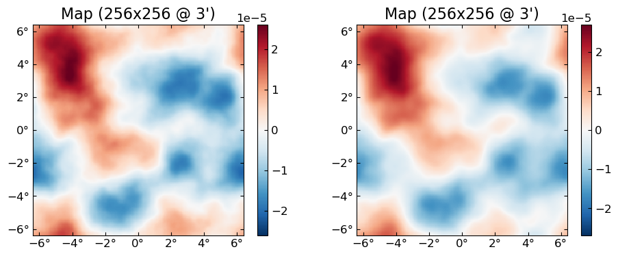
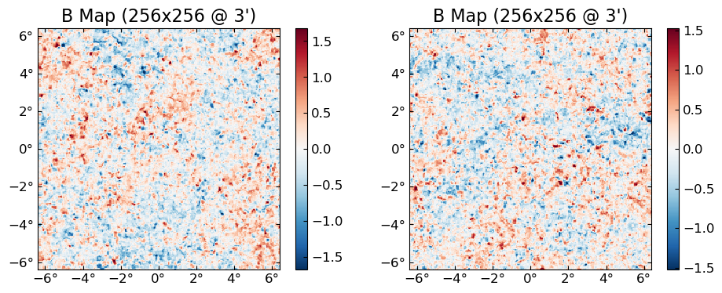
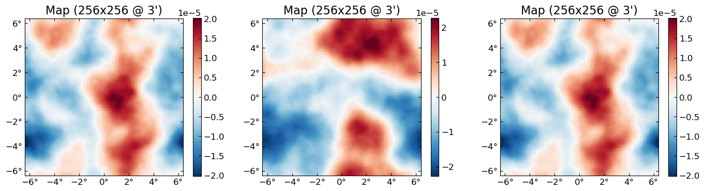

GPU
CMBLensing uses CUDA.jl for GPU functionality.
To use CUDA.jl, you'll need an Nvidia GPU and a recent version of the CUDA libraries.
NERSC-specific instructions: On NERSC, just load the modules cudnn/7.6.5 and cuda/10.2.89 (other versions may work but those have been tested) and add export JULIA_CUDA_USE_BINARYBUILDER=false to your bashrc.
See also install instructions for more info.
CUDA basics
To start, load the packages. Note that due to some Julia intricasies, you must load CUDA first:
using CUDA, Adapt, CMBLensing, Random, PyPlotTo check everything loaded correctly:
CUDA.device()CuDevice(0): Tesla V100-SXM2-16GBCUDA.functional()trueCUDA.jl provides an array type called CuArray which is an array that resides on GPU. You can convert Arrays to CuArrays via the adapt function:
x_cpu = rand(128,128)
x_gpu = adapt(CuArray, x_cpu)128×128 CuArray{Float64,2}:
0.0687061 0.323452 0.499862 0.201088 … 0.953384 0.995337 0.167936
0.549291 0.84707 0.13641 0.140519 0.0863971 0.976545 0.404249
0.75233 0.344927 0.457225 0.473147 0.425078 0.580845 0.00607347
⋮ ⋱ ⋮
0.823417 0.687004 0.655753 0.689161 0.337063 0.980848 0.753333
0.283694 0.403416 0.87598 0.130036 0.753313 0.340956 0.400289Any operations you now to do x_gpu are done on GPU and are super fast (although benchmarking can be subtle):
2 * x_gpu + x_gpu # happened on GPU128×128 CuArray{Float64,2}:
0.206118 0.970356 1.49959 0.603264 … 2.86015 2.98601 0.503807
1.64787 2.54121 0.40923 0.421558 0.259191 2.92964 1.21275
2.25699 1.03478 1.37168 1.41944 1.27523 1.74254 0.0182204
⋮ ⋱ ⋮
2.47025 2.06101 1.96726 2.06748 1.01119 2.94254 2.26
0.851083 1.21025 2.62794 0.390108 2.25994 1.02287 1.20087Note also that cu(x) is shorthand for adapt(CuArray{Float32}, x), and cpu(x) is shorthand for adapt(Array, x) which moves a GPU array back to CPU (generally there's not many situations where you need to explicitly do this).
CMBLensing GPU basics
CMBLensing fields can be put on GPU in exactly the same way.
f_cpu = FlatMap(rand(128,128))
f_gpu = cu(f_cpu)16384-element FlatMap{128×128 map, 1′ pixels, fourier∂, CuArray{Float32,2}}:
0.10891746
0.75744337
0.72595507
⋮
0.26491597
0.5190752Everything you can do to a CPU Field object you can do to a GPU one.
f_gpu' * (2 * Fourier(f_gpu))10944.155f0cu(x) works recursively through most objects, for example through NamedTuples:
(x=f_cpu, y=f_cpu) |> typeofNamedTuple{(:x, :y),Tuple{FlatMap{128×128 map, 1′ pixels, fourier∂, Array{Float64,2}},FlatMap{128×128 map, 1′ pixels, fourier∂, Array{Float64,2}}}}cu((x=f_cpu, y=f_cpu)) |> typeofNamedTuple{(:x, :y),Tuple{FlatMap{128×128 map, 1′ pixels, fourier∂, CuArray{Float32,2}},FlatMap{128×128 map, 1′ pixels, fourier∂, CuArray{Float32,2}}}}You can move an entire DataSet to GPU too with cu(ds), which recursively moves all the fields and operators inside this object to GPU:
@unpack ds, ϕ = load_sim(Nside=256, θpix=3, pol=:P);ds.d |> typeofFlatEBFourier{256×256 map, 3′ pixels, fourier∂, Array{Complex{Float32},2}}cu(ds).d |> typeofFlatEBFourier{256×256 map, 3′ pixels, fourier∂, CuArray{Complex{Float32},2}}Note that on NERSC, the load_sim command above is really slow because the GPU nodes only give you a few CPU cores per GPU (rather than the 64 cores you get on a CPU compute node). You can also generate the DataSet directly on GPU, which is much faster:
@unpack ds, ϕ = load_sim(Nside=256, θpix=3, pol=:P, storage=CuArray);Once you have the DataSet object on GPU, all the normal high-level operations work on it, e.g.:
fJ,ϕJ = MAP_joint(ds, nsteps=10, progress=true);[32mMAP_joint: 100%|████████████████████████████████████████| Time: 0:00:05[39m
[34m step: 10[39m
[34m χ²: 132046.02[39m
[34m Ncg: 2[39mplot([ϕ ϕJ])
Batching
Just moving a DataSet to GPU will give you factors of about 2 - 10 speeds over CPU for Nside of 128 - 1024. You can go even faster by "batching," which means doing the same operations to multiple fields at once, i.e. in "batches". The trick is that for the full speedup, this parallelization has to happen on the inner-most-loop so that the GPU basically goes through the data all at once with a single GPU kernel. You do this by putting multiple fields into single "batched fields".
Suppose you had 10 fields on GPU that you want to lense:
fs = [simulate(ds.Cf) for i=1:10]
ϕs = [simulate(ds.Cϕ) for i=1:10];You could do the following, and it might still be a little faster than doing it sequentially:
f̃s = [LenseFlow(ϕ)*f for (f,ϕ) in zip(fs,ϕs)];But the really fast way to do it is pack those 10 fields into a batched field (note the indication these are batched in the printed type information):
f_batch = batch(fs)660480(×10)-element FlatEBFourier{256×256(×10) map, 3′ pixels, fourier∂, CuArray{Complex{Float32},3}}:
0.0f0 + 0.0f0im
2231.683f0 + 1578.4241f0im
-1101.9895f0 + 6993.024f0im
⋮
0.07073971f0 + 0.12127238f0im
-0.018757222f0 - 0.29610783f0imϕ_batch = batch(ϕs)330240(×10)-element FlatFourier{256×256(×10) map, 3′ pixels, fourier∂, CuArray{Complex{Float32},3}}:
0.0f0 + 0.0f0im
0.15543585f0 + 0.0040701367f0im
0.049608342f0 - 0.11676395f0im
⋮
-3.4914913f-7 + 7.705292f-7im
-7.6260557f-7 + 3.076318f-7imAnd then run the lensing operation once, which will lense each of the 10 fs by the corresponding ϕ.
f̃_batch = LenseFlow(ϕ_batch) * f_batch1310720(×10)-element FlatQUMap{256×256(×10) map, 3′ pixels, fourier∂, CuArray{Float32,3}}:
-3.9583502
-3.0105171
-2.999421
⋮
0.20551158
0.5773034For the problem size of Nside=256, doing this batch of 10 lenses is almost no slower than doing a single one.
You can get the individual fields out of the batched result with batchindex, e.g. the first 2 (out of 10) lensed B fields:
plot([batchindex(f̃_batch,1) batchindex(f̃_batch, 2)], which=:Bx)
Normal broadcasting rules apply between batched and non-batched fields, so e.g.:
LenseFlow(ϕ) * f_batch1310720(×10)-element FlatQUMap{256×256(×10) map, 3′ pixels, fourier∂, CuArray{Float32,3}}:
-4.148711
-3.4063883
-2.7889354
⋮
0.9247154
-0.82399666works and lenses the 10 different fields in f_batch by the same (non-batched) ϕ.
Most of CMBLensing works with batched fields just like with normal fields. This includes things like lnP, conjugate_gradient or sample_joint, although MAP_joint and MAP_marg only work with non-batched fields (but will be fixed in the future).
Gotchas
Not much, hopefully. If something that works on CPU doesn't work on GPU, please file an Issue.
One thing to keep in mind is that CPU and GPU use different random number generators, so seeds will not correspond. Note however you can force a GPU simulation to use the CPU RNG by passing rng=MersenneTwister().
plot([simulate(cpu(ds.Cϕ),seed=0) simulate(cu(ds.Cϕ),seed=0) simulate(cu(ds.Cϕ),seed=0,rng=MersenneTwister())])